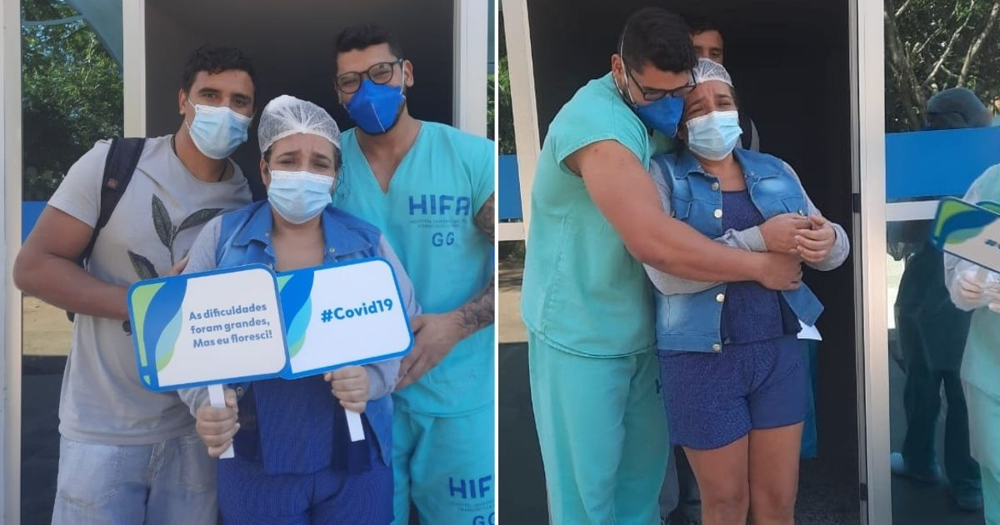
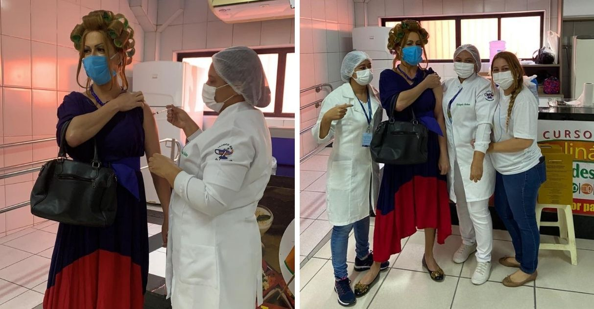
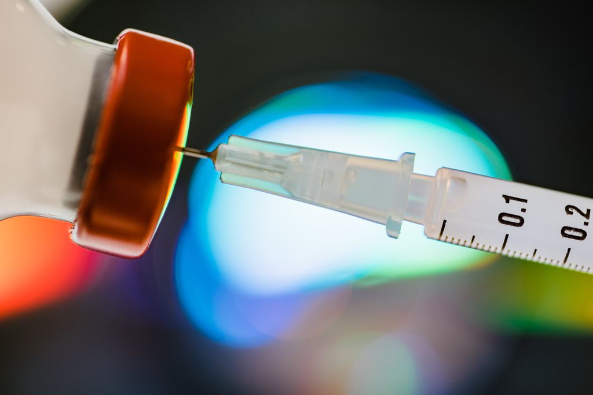

Dose de Esperança
Fontes:
Enfermeiro remove tubo de sua própria mãe que venceu Covid-19 no Espírito Santo
Fonte: HIFA
Cabeleireiro vai se vacinar contra Covid vestido de Dona Hermínia no RN: ‘Singela homenagem’
Fonte:Razões para Acreditar
ERRADICAR A COVID-19 É POSSÍVEL? SIM! ENTENDA COMO ISSO PODE ACONTECER.
Fonte:Canal Tech

Brasil ultrapassa marca de 50% da população adulta protegida com as duas doses ou dose única da vacina Covid-19

Fonte: Ministério da Saúde